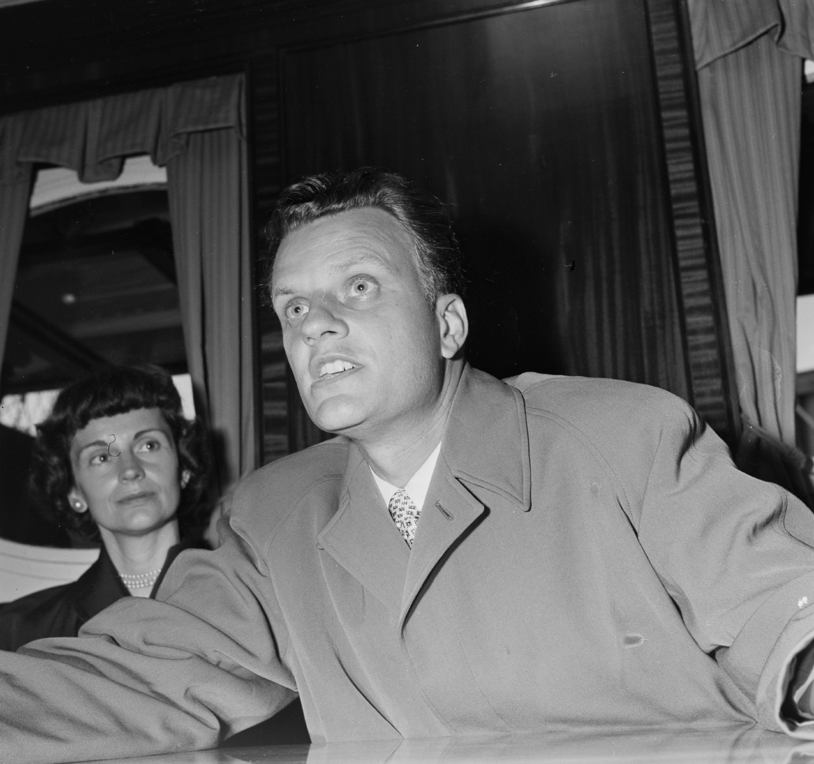

-1-MasterItem.svg)
Stories of Westminster United Church & its People / Page
77
of substance there and acquitted himself well. The
New York Times
reported on his sermons every
week. He had the opportunity to broadcast weekly for 20 years on radio station
WABC to an audience
thought to be in the numbers of three million listeners. He initiated a
dial-a-prayer telephone
ministry ( he is credited with being the first minister to use this means of
reaching people in need of
pastoral care.)
He became a confidante of Billy Graham, accompanied the famous
evangelist on a preaching crusade to Scotland in 1955 and was honoured
by Graham on the platform during public meetings in his New York
Crusade in 1957. (He was also roundly reviled by Fundamentalist clerics
in the U.S as the Devil’s minister in his association with Graham.) “Dr.
(Billy) Graham is the front man, the chief spokesman for a growing group
of people who believe in yoking up with unbelievers contrary to the
Scriptures. They believe that a man may be saved without believing that
the Bible is true or without believing in the virgin birth or the deity of
Christ. They call people Christians who are really infidels by dictionary
definition; that is, not believing the fundamentals of the historic Christian
faith”
(John Rice,
Sword of The Lord
).
He was regarded as the founder of the concept of pastoral psychology. As
mentioned in Part Two
Bonnell wrote several books (basically directed at fellow ministers) in which he
expounded on the
ideas he had developed on the marriage of spirit and psychology, encouraging
other ministers
to employ his techniques in their pastoral work. Some of these books are still
available
online for purchase.
Among the many influences that attracted Bonnell’s attention in New York was Toyohiko Kagawa.
Kagawa was a Japanese evangelist and social activist who spent time in the U.S.,
studying at
Princeton Seminary and later travelling about the U.S. and Canada delivering his
message of
The Kingdom Of God. While at Westminster Church, Bonnell visited New York in
1931 and spent
Rev. John Sutherland Bonnell
